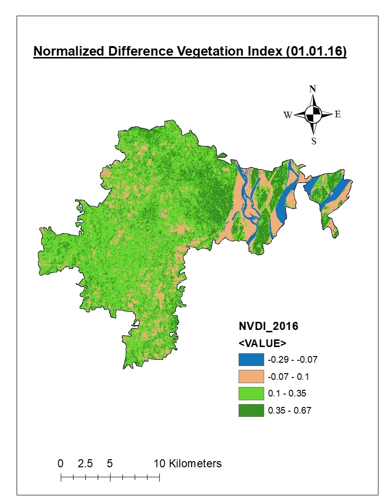
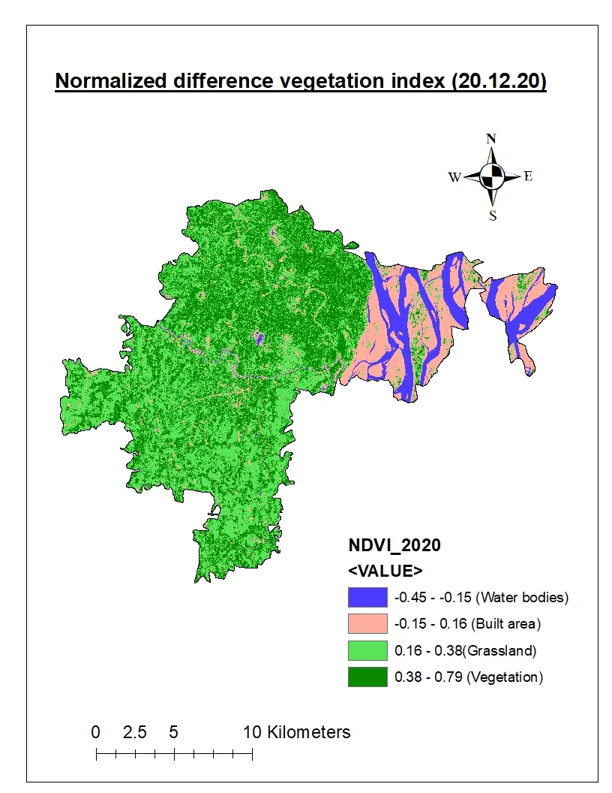
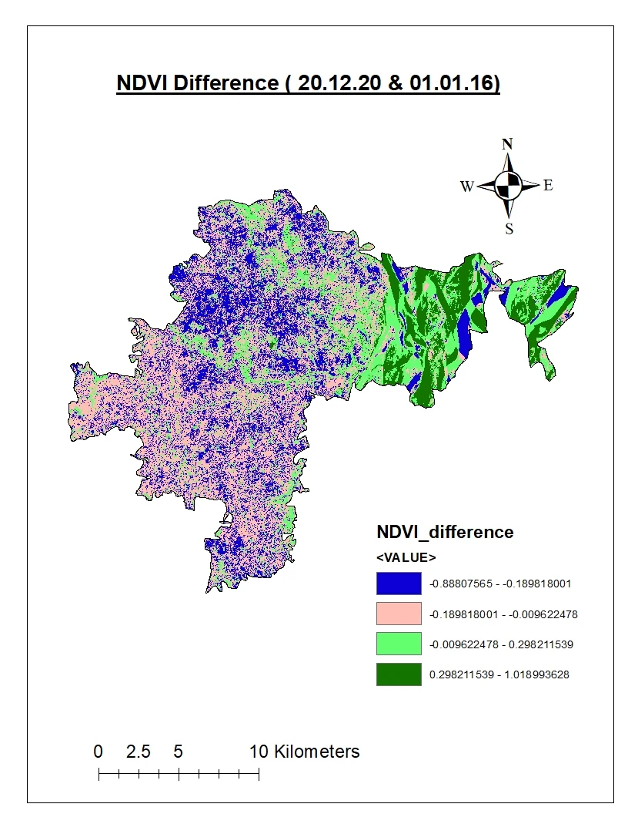

Study question
I examined how major land-cover classes changed between 2016 and 2020, using vegetation indices and classification outputs to interpret the change.
Workflow
01Prepare multi-date imagery
02Classify land cover
03Calculate NDVI
04Compare 2016 and 2020
I produced supervised and unsupervised classification outputs, class-area calculations and vegetation-index maps. The exercise helped me compare how different remote-sensing products describe spatial change.
Selected outputs



Limitations
Two-date change detection is sensitive to season, atmospheric conditions, class confusion and training data. I treat these outputs as a coursework exercise in classification and change detection, not as a complete long-term land-use history.